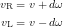
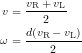
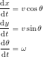
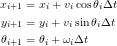
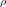
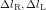
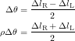
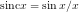

ロボットの走行経路を制御するには、ロボットが今どこにいるのかを知ること、自己位置推定が必要となります。 GPSを使ったり、カメラで撮影た床や天井の映像から推定したりといった様々な手法が提案されています。 しかし、これらの手法は非常に複雑な処理が必要となります。 そこで、比較的簡単な、タイヤの回転角から現在位置を推定する手法を考えてみましょう。 この様な手法は、オドメトリやデッドレコニングといいます。
制御モデルの作成で扱ったように ロボットの速度・角速度と、タイヤの速度関係は次のように表すことができます。
この関係から逆に、タイヤの速度から、ロボットの速さと角速度を求めることができます。
これから以下の微分方程式を解けば良いことがわかります。
この微分方程式は解析的に解くことができません。 したがって次式を用いて数値積分を行うことになります。
これはロボットの移動を直線で近似することと対応します。
もう少し詳しくロボットの移動を見てみましょう。
微小時間 の間のロボットの速さはほぼ一定と考えられ、この間ロボットは円弧軌道を描くと見なせます。
の間のロボットの速さはほぼ一定と考えられ、この間ロボットは円弧軌道を描くと見なせます。
| 図1 ロボットの移動する軌跡 |
図1のように微小時間の間に、
ロボットが半径円運動をして、向きがだけ変化したとします。
このとき、右と左のタイヤが進んだ距離は次のようにあらわされます。
これから、次の関係が得られます。
この間ロボットが移動したかを考えてみましょう。 上の関係と、三角関数の和を積に直す公式を使うと次のように書けます。
![\begin{eqnarray*} \Delta x & = & \rho(\sin(\theta+\Delta\theta)-\sin\theta) \\ &=& 2\rho\cos\left(\theta+\frac{\Delta\theta}{2}\right)\sin\left(\frac{\Delta\theta}{2}\right) \\ &=& \rho\Delta\theta\cos\left(\theta+\frac{\Delta\theta}{2}\right)\frac{\sin\left({\displaystyle \frac{\Delta\theta}{2}}\right)}{\displaystyle \frac{\Delta\theta}{2}} \\ &=& \frac{\Delta l_\mathrm{R}+\Delta l_\mathrm{L}}{2}\cos\left(\theta+\frac{\Delta\theta}{2}\right)\mathrm{sinc}\frac{\Delta\theta}{2} \\ \Delta y & = & \rho(-\cos(\theta+\Delta\theta)+\cos\theta) \\ &=& \frac{\Delta l_\mathrm{R}+\Delta l_\mathrm{L}}{2}\sin\left(\theta+\frac{\Delta\theta}{2}\right)\mathrm{sinc}\frac{\Delta\theta}{2} \end{eqnarray*}](../../../memo/tenchijin/eqn/d68215dd392d4f0c1ad0fc6ba3401827.gif)
ここでという形の関数が現れます。 これはsinc関数(シンクかんすう) と呼ばれる関数です。ここで出てきたものは、厳密には、非正規化sinc関数やカーディナル・サインと呼ばれます。
さて、このsinc関数、定義通りに計算するとx=0のとき0/0の不定形になってしまいます。 数学的にはsinc0=1と定義するのが普通ですが、コンピュータで扱う場合には少し注意が必要です。 x=0の近くでは次のような工夫をする必要があるでしょう。
が小さければ、ロボットの向きの変化も十分小さいと考えられます。
したがって、sinc関数の二次の項以降は無視できるほど小さいはずです。
そこで、sinc関数をx=0付近で一次近似し、と置いてしまいます。
天地人ではこの方法をとりました。
オドメトリはタイヤの回転角のみを使用するので、次のような問題があります。